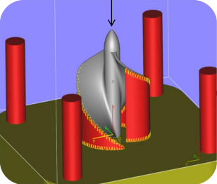

<app-build-list class="build-list"></app-build-list>

<div class="build-container">
  <div class="image">
    
  </div>
  <div class="data">
    <div *ngIf="build != null">
      <h1>Build</h1>
      <div class="input-container" *ngIf="!createMode">
        <label>ID:</label>
        <input type="text" [(ngModel)]="build.build_id" disabled/>
      </div>
      <div class="input-container">
        <label>Material:</label>
        <input  type="text" [(ngModel)]="build.material" disabled="{{viewMode}}"/>
      </div>
      <div class="input-container">
        <label>Comment:</label>
        <textarea [(ngModel)]="build.comment" disabled="{{viewMode}}"></textarea>
      </div>
      <div *ngIf="!viewMode">
      <div class="input-container design" *ngFor="let design of build.relatedDesigns; let i = index">
        <label>{{design.name}} ({{design.design_id}}):</label>
        <input type="number" class="part-count" [(ngModel)]="design.copies">
        <button class="part-btn btn-danger" (click)="removeDesign(i)">-</button>
      </div>
      <div class="input-container design">
        <label>Add:</label>
        <select [(ngModel)]="newDesign">
          <option *ngFor="let design of designs.filter(notInBuild.bind(this))" [ngValue]="design">
            {{design.name}} ({{design.design_id}})
          </option>
        </select>
        <button class="part-btn btn-new" (click)="addDesign(newDesign)">+</button>
      </div>
    </div>
    </div>
    <div *ngIf="viewMode && !createMode">
      <button class="btn-rasied btn-danger" (click)="remove()">Delete</button>
      <button class="btn-rasied btn-light" (click)="toggleEdit()">Edit</button>
      <button class="btn-rasied btn-success" [routerLink]="['/build', 'new']">New</button>
    </div>
    <div *ngIf="!viewMode && !createMode">
      <button class="btn-rasied btn-danger" (click)="reset()">Reset</button>
      <button class="btn-rasied btn-success" (click)="save()">Save</button>
    </div>
    <div *ngIf="createMode">
      <button class="btn-rasied btn-danger" (click)="reset()">Discard</button>
      <button class="btn-rasied btn-success" (click)="create()">Create</button>
    </div>
  </div>
  <div>
    <h2>Contains:</h2>
    <div *ngIf="build != null" class="list-container">
      <a *ngFor="let design of build.relatedDesigns" [routerLink]="['/design', design.design_id]">
        {{design.name}} x {{design.copies}}
      </a>
    </div>
  </div>
  <div >
    <h2>Runs:{{build?.relatedPrints.length}}</h2>
    <div *ngIf="build != null" class="list-container">
      <a *ngFor="let print of build.relatedPrints" [routerLink]="['/print', print.slm_id]">
        {{print.start_time | date : 'yyyy-MM-dd' }}
      </a>
    </div>
  </div>
</div>
